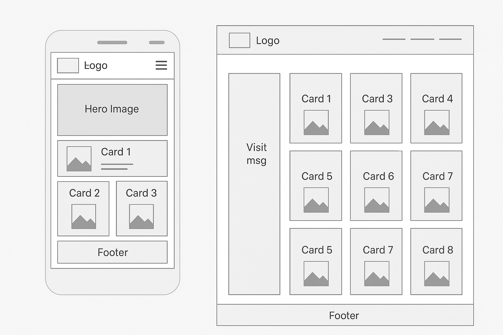

Individual Project Site Plan
Site Name
Bukoleya Extra
This name was chosen because it reflects the site's goal: offering a variety of African-focused full movies categorized by language, origin, and genre. The word “Extra” suggests added value or a wide range of entertainment content.
Optional domain: bukoleyaextra.com
Site Purpose
The purpose of Bukoleya Extra is to provide users with a curated collection of embedded full-length movies from across Africa. It will allow users to explore movies by category, discover new films, and view content directly within the site without needing to leave for another platform.
Scenarios
- What are the best Ugandan action movies available to watch right now?
- How can I find movies in Swahili or Yoruba on this site?
Color Schema
- Primary Color – #003366 (Dark Blue): Used for headings and navigation background.
- Accent Color – #FF9900 (Orange): Used for call-to-action buttons, highlights, and links.
- Background – #f4f4f9 (Light Grey): Used as the page background color for a clean look.
Typography
- Montserrat: Used for headings and navigation titles for a bold and modern feel.
- Roboto: Used for body text to ensure readability across devices.
Wireframes
Mobile View
This layout focuses on a structure with stacked navigation .
